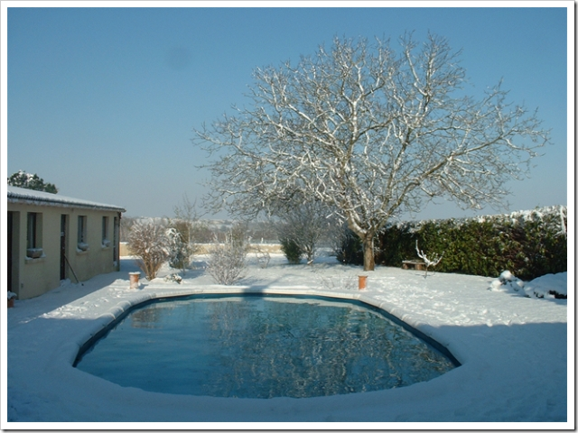
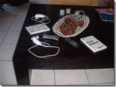
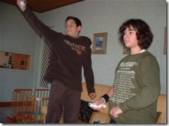

25 janvier 2007
Journée neige : Wiiiiiii !
Hier soir, il a neigé, et donc aujourd'hui impossible de se rendre au lycée à cause de la neige sur les routes.

Et mon frère a eu la brillante idée d'inviter un de ses amis qui habite à 2 pas de chez nous pour apporter sa Wii !
2 Nunchuks, Wii Play et Wii Sports
De gauche à droite : Pierre et mon frère Clément. J'ai fait la mise à jour de sa Wii et j'ai pû ainsi essayer la chaîne météo et le navigateur Opera qui est en beta-test. J'ai aussi essayé la chaîne météo, le bureau Wii etc... L'interface des chaînes est vraiment intuitive. La connexion WiFi via mon routeur ne posait pas de problème, la configuration via la Wii est relativement facile. Pour ma part, j'attend toujours la Wii. D'après le magasin E.Leclerc les prochains stocks arriveront pour Février. ;)
Commentaires 0
Aucun commentaire.